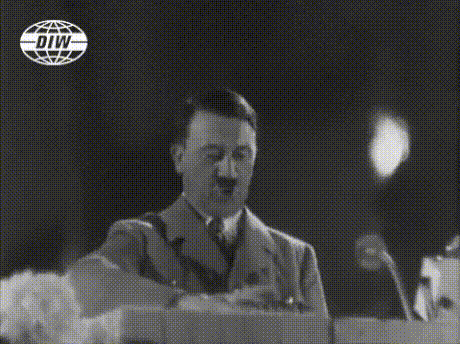

и почему же за его невозмутимым выражением лица скрывается продажа родины гитлеру за кукурузные палочки
|имя
|рост
|статус |
|шкипер
|30-38 см
|шкипер|

примечание: после того, как гитлер начал сотрудничество со шкипером, он влюбился в водную тематику и приказал на каждое его выступление возить аквариум с тренированным дельфином. позже гитлер дал дельфину имя "taktischer Delphin"